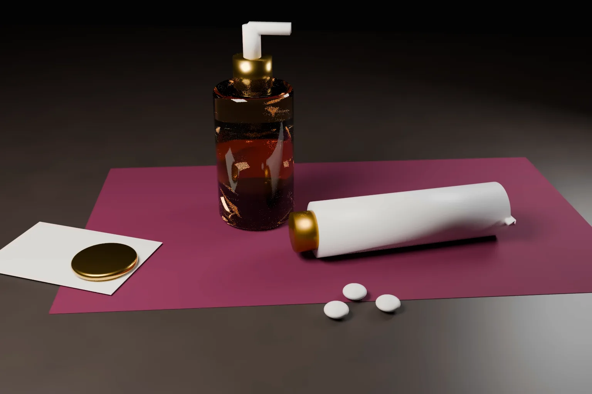

When is a product name too close to a registered medicine brand? On 16 October 2026 the Delhi High Court gave a clear answer on trademark infringement in India. In Mankind Consumer Products Pvt Ltd v Alaina Healthcare Pvt Ltd, it restrained the name ACNE SCAR for a skin serum because it was nearly identical to the registered mark ACNESTAR.
The ruling matters to every company that names a product after the condition it treats. This article explains what the court decided and what it leaves open. It then compares the position in the United States, the European Union and the UK.
- Justice Purushaindra Kumar Kaurav granted an interim injunction in CS(COMM) 280/2026 against ACNE SCAR, ACNE + SCAR and ACNESCAR for pharmaceutical, skin care and allied goods.
- ACNESTAR is registered under No. 1352577 in Class 5. The court held that the two names differ by a single letter and sound nearly the same.
- The house marks HEXILAK and MENARINI on the pack did not help. The court found that ACNE + SCAR was used as the product name, not as a description.
- A medicinal gel and a cosmetic serum were treated as allied and cognate goods. The court applied the stricter standard that Indian courts use for medicines.
- The defendants got two months to recall stock. They remain free to describe the product as a serum for acne scars.
The dispute
Mankind Consumer Products owns the word mark ACNESTAR, registered in Class 5 with effect from 25 April 2005. The mark came to it by assignment within the Mankind group. It is used for a clindamycin and nicotinamide gel for acne, and also for soaps and face washes. The plaintiff claimed sales of about ₹540 crores since launch.
The second defendant, A. Menarini India, markets a serum for acne scars made by Alaina Healthcare under a cosmetics licence. The pack carries HEXILAK, a mark registered to the Menarini group, together with the words ACNE + SCAR. The defendant showed sales of this product from August 2022.
The suit was filed in March 2026. An ex parte injunction followed but was kept in abeyance after an appeal. The court then heard the application afresh and pronounced its decision on 16 October 2026.
The name had been litigated before. In September 2025 a Division Bench of Justices C. Hari Shankar and Om Prakash Shukla, in Mankind Pharma v Brinton Pharmaceuticals, restrained another company from using ACNESCAR. That bench held that the marks were phonetically nearly identical. It also said that “innocence is no defence.”
What the court decided
The marks are compared as wholes. The defendant argued that ACNE is a common word and must be discounted. The court accepted that nobody can claim exclusive rights in ACNE. But the plaintiff did not claim ACNE alone. It claimed ACNESTAR as a whole, and a mark cannot be split into parts for comparison. The court found that ACNESCAR differs only by one letter, at the sixth position, and that the two are almost indistinguishable when spoken. The plus sign made no difference.
A house mark does not cure infringement. The court found that ACNE + SCAR appeared in larger letters than HEXILAK itself. It held that ACNE + SCAR identified this particular product within the HEXILAK range. Once the essential features of a registered mark are copied, added matter does not save the defendant. The court relied on the Supreme Court decision in Kaviraj Pandit Durga Dutt Sharma for this point.
Descriptive use means use as a description. Section 30(2)(a) and section 35 of the Trade Marks Act, 1999 protect honest descriptive use. The court held that they do not cover use as a trade mark. The test is how the defendant actually uses the words. The product licence named the product Hexilak Acne Scar Serum, and the descriptor on the pack was a separate line, serum for acne scars. On that material, ACNE + SCAR was the product name.
Medicines and cosmetics can be allied goods. Both products treat skin conditions. Both are sold through chemists and the same online platforms. Following Brinton, Glenmark and the Supreme Court decision in Cadila Health Care v Cadila Pharmaceuticals, the court applied a stricter standard because one product is a medicine. It could not rule out a chemist or consumer taking one for the other.
Delay and earlier statements did not defeat relief. The defendant pointed to sales since 2022 and to a 2017 pleading by the plaintiff's predecessor that no one can own the word ACNE. The court held that mere delay does not defeat an injunction and that acquiescence needs a positive act. It held that a position taken against a third party in another class was not relevant here. It also treated an error in the plaint about when the defendants began selling the product as inadvertent and not material.
The court found a prima facie case under section 29(2)(b). It held that the balance of convenience favoured the plaintiff because the order touches only the product name, not HEXILAK, MENARINI or the product itself.
What the ruling does not decide
- It is an interim order. The court said its findings are prima facie only. The suit will go to trial.
- It does not give anyone a monopoly over ACNE or over describing a product. The court expressly left the defendants free to call the product a serum for acne scars in the ordinary descriptive sense.
- It does not decide whether ACNESTAR is itself descriptive. The court said that argument did not persuade it at this stage, as registration is prima facie evidence of validity under section 31.
- It does not hold that every medicine and every cosmetic are allied goods. The finding rested on shared purpose, shared channels and the plaintiff's own skin care range.
For a wider view of when use of another brand is allowed, see our guide on using a registered trademark without permission. Our earlier analysis of ACC Steel v ACC shows how far protection reaches across classes.
The United States: fair use only otherwise than as a mark
US law has a similar rule. Under 15 U.S.C. 1115(b)(4), a defendant may use a term that describes its goods if the use is fair, in good faith, and “otherwise than as a mark.” A product name on the front of a pack will rarely qualify. As in India, the defence protects the words, not their use as a brand.
Infringement turns on likelihood of confusion. US courts have been strict with drug names. In Kos Pharmaceuticals v Andrx (3d Cir. 2004), the Third Circuit directed a preliminary injunction against ALTOCOR in favour of ADVICOR. It held that confusion is not limited to pharmacists filling the wrong prescription. Confusion as to source is also actionable.
The EU and the UK: honest practices
Article 14(1)(b) of Regulation (EU) 2017/1001 allows use of signs that concern the kind, quality or intended purpose of goods. Article 14(2) adds a condition. The use must be in accordance with honest practices in industrial or commercial matters. Section 11(2)(b) of the UK Trade Marks Act 1994 is in the same terms.
The European test differs from the Indian one in form. India asks first whether the words are used as a trade mark. Europe asks whether the use is honest. In practice the result is often the same. Choosing a name that is one letter away from a registered competitor mark is hard to defend as honest, whatever the words mean. Infringement under Article 9(2)(b) also depends on likelihood of confusion, on the part of the public.
Practical steps for brand owners and new entrants
- Search Class 5 as well as Class 3 before naming a skin care or wellness product. A medicine brand can block a cosmetic name.
- Do not rely on a house mark to separate a product name from a registered mark. Courts compare the product name itself.
- Keep descriptive words descriptive. Use them in a sentence about the product, in smaller type, and not as the name.
- Read the product licence and invoices. The court looked at how the product was named in regulatory and trade papers.
- Owners of medicine brands should watch for close variants on online marketplaces and act early, even though delay alone is not fatal.
- For launches in the US and Europe, clear names in each market. A fair use or honest practices defence is unlikely to rescue a near identical name.
Our trademark search, filing and enforcement team can clear product names for pharmaceutical and personal care launches in India and abroad.
Frequently asked questions
Is using a descriptive word in a brand name trademark infringement in India?
It can be. Sections 30(2)(a) and 35 protect only use that describes the goods. If the words are used as the product name and are deceptively similar to a registered mark, the Delhi High Court held prima facie in ACNESTAR v ACNE SCAR that the defence does not apply.
Does adding a house mark avoid trademark infringement?
Usually not where the product name itself copies the essential features of a registered mark. The court held that HEXILAK on the pack did not cure the similarity between ACNE SCAR and ACNESTAR.
Are medicines and cosmetics similar goods for trademark purposes?
They can be. The court treated a prescription acne gel and a cosmetic scar serum as allied and cognate goods because they treat related skin conditions and are sold through the same channels to the same buyers.
Official source
- Mankind Consumer Products Pvt Ltd v Alaina Healthcare Pvt Ltd, Delhi High Court, CS(COMM) 280/2026, judgment of 16 October 2026 (text on Indian Kanoon)
- The Trade Marks Act, 1999 on India Code (sections 29, 30, 31 and 35)
- 15 U.S.C. 1115, including subsection (b)(4)
- Regulation (EU) 2017/1001 on the European Union trade mark
- UK Trade Marks Act 1994, section 11